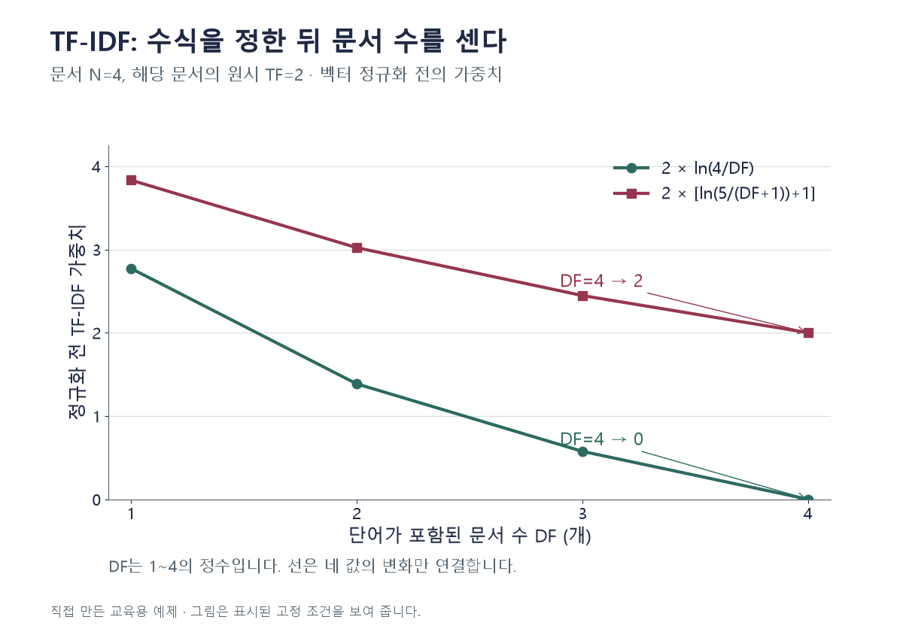

핵심 이론
TF는 한 문서 안에서 특정 단어가 얼마나 나타났는지 표현한다. DF는 전체 문서 중 그 단어가 한 번 이상 있는 문서의 수다. 같은 문서에서 열 번 반복돼도 그 문서의 DF 기여는 1이다. IDF는 여러 문서에 널리 나타나는 단어의 상대적 가중치를 낮추기 위해 사용한다.
정확한 수식은 설정에 따라 다르다. 이 글의 자체 계산은 TF를 원시 빈도, IDF=ln(N/DF), 정규화 없음으로 명시한다. 이 조건에서 모든 문서에 등장하면 IDF=0이다. 반면 scikit-learn의 기본 설정은 평활화와 +1, L2 정규화를 사용하므로 같은 입력에서 기본 출력값이 이 예제와 같지 않을 수 있다. scikit-learn에서 smooth_idf=False만 지정해도 IDF의 +1은 남는다. 이 글의 ln(N/DF)와 같게 만들려면 평활화 여부뿐 아니라 +1과 벡터 정규화 조건까지 대조해야 한다.
문서 행과 단어 열의 수치 행렬을 만들 때 어휘와 IDF를 학습 자료에서 적합하고 새 문서에는 그 기준으로 변환한다. 전체 시험 문서까지 보고 단어 가중치를 미리 정하면 평가 조건이 달라질 수 있다. TF-IDF는 단어 순서나 모든 문맥 의미를 자동으로 표현하는 기법이 아니라 지정된 텍스트 특징 가중치다.
작은 예제로 확인하기
전체 문서 N=4, 한 문서에서 단어 t의 TF=2다. t가 등장하는 문서는 2개다. IDF=ln(N/DF), 정규화 없음으로 계산한다.
| 단계 | 계산 | 값 |
|---|---|---|
| IDF | ln(4/2) | ln2 |
| TF-IDF | 2ln2 | 약 1.386 |
분모 DF=2는 전체 토큰 횟수가 아니라 단어를 포함한 문서 수다. 이 수식과 라이브러리 기본 수식을 구별한다.
그림으로 확인하기

직접 고르기
IDF=ln(N/DF), TF는 원시 빈도, 정규화 없음. N=4, DF=2, 해당 문서 TF=2.
TF-IDF는?
- 1. 0
- 2. ln2
- 3. 2ln2
- 4. 4ln2
정답과 오답의 이유 확인하기
정답 3번 — 2ln2
IDF는 ln2이고 TF 2를 곱하므로 2ln2다.
- 1번: 단어가 모든 문서에 있는 조건 N=DF가 아니다.
- 2번: IDF만 구하고 TF 2를 곱하지 않았다.
- 4번: TF 또는 문서 수를 중복으로 곱했다.
조건 하나 바꾸어 풀기
같은 수식에서 DF만 4로 바뀌고 TF=2라면 TF-IDF는?
풀이: 0.
IDF=ln(4/4)=0이다. +1이 있는 다른 구현의 기본값으로 이 결론을 옮기지 않는다.
다시 떠올릴 단서
TF는 한 문서, DF는 문서 수. 수식도 적는다.
근거와 적용 조건
- scikit-learn Feature extraction — 8.2.3.5 Tf–idf term weighting: TF·DF 및 평활화·정규화에 따른 수식 차이. 확인일 2026-10-30.
상황·수치·보기·조건 변경은 자체 교육 예제다. 민간 복원 문항의 공식 정답이나 실제 성능·학습 효과를 뜻하지 않는다.
읽은 내용을 적용해 보기
N4·TF2 고정이다. 두 수식 모두 벡터 정규화 전 값이며 스무딩 선택만으로 전체 라이브러리 파이프라인을 재현하지 않는다.